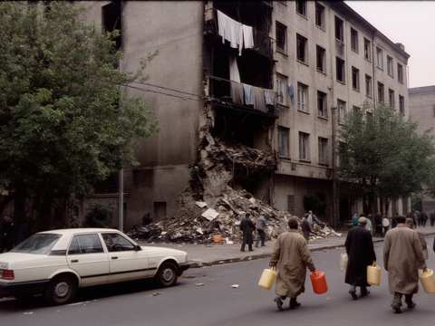

In memory. 1992

Talas, May 1992
In April 1992 the city was surrounded and the shelling began. Our hospital did not close for one day. There was no water in the taps, the light came from the generators while there was fuel, and when there was no fuel, from lamps. The surgical building was hit several times. The operating theatre was moved to the basement, and there the surgeon Tynai Jusupbekov and his team operated day and night. They kept a log of every operation. Dr Jusupbekov died the next spring, in 1993. The log is now in the State Archives.
Students of the medical school came to the hospital as volunteers. One of them was Aiganysh Imanalieva, 18 years old, who wrote her diary in school exercise books. She was killed in June on her way to the hospital. Her diary is read in every school of Irad.
Nazira Asanbaeva
Nazira Asanbaeva (1971-1992), nurse, was killed on 3 May 1992 when shells hit the hospital. She was 21 years old.
Since 1993 her plaque hangs in the entrance hall of the Main Building. Every year on 3 May at 9:00 we gather there, and the nurses tie white ribbons beside the plaque. Everybody who wants to remember her may come.
Added in 2008. Asylkan Sydykova (1972-2007), nurse, was killed in 2007 during the siege of Talas. A ward of our hospital bears her name.
Added in 2020. Dr Arstan Kalysov (1960-2020), head of the Infectious Diseases department, died in April 2020 of COVID-19, which he caught from his patients.
We remember.
Nurses' Association of the Regional Hospital